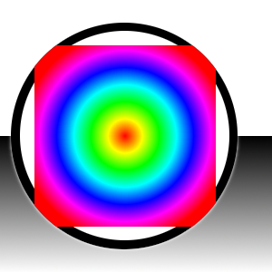
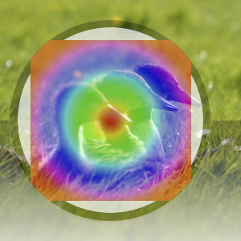
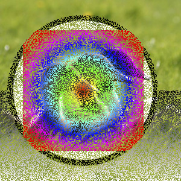
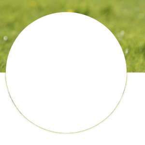
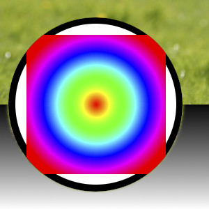

GIMP has a wide variety of layer modes, split up in seven groups: Normal, Lighten, Darken, Contrast, Inversion, HSV components, and LCh components. In addition to these layer modes, there are also the so-called legacy layer modes, which were used before GIMP 2.10.
These legacy layer modes are still available, both for backwards compatibility with saved images from older GIMP versions, and also for specific effects, or for compatibility with other image formats, e.g. Photoshop PSD. In general, they are not used when creating new images.
Layer modes are also called “blending modes”. Selecting a layer mode changes the appearance of the layer or image, based on the layer or layers beneath it. Each layer in an image can have a different layer mode. The effects of these layer modes are cumulative. However, setting the mode to anything but Normal for the bottom layer of any layer group and the bottom layer of the image has no effect.
In addition to the generic layer modes, there is one more layer mode called “Pass through”, which is only available for group layers.
Pass through mode, is less a blending mode in and of itself than an instruction for the group as a whole: it indicates that layers inside the group are to be rendered in combination with other layers below the group, instead of being rendered separately from them.
For more details about Pass through, see Pass through in the Glossary.
You can set the layer mode in the Mode drop-down menu at the top of the Layers Dialog. GIMP uses the layer mode to determine how to combine each pixel in the top layer with the pixel in the same location in the layer below it.
![[Note]](images/note.png)
|
Note |
|---|---|
|
When the active tool is a painting tool, there is a drop-down list in the Tool Options which contains modes that affect the painting tools in a similar way to the layer modes. You can use all of the same modes for painting that are available for layers, and there are additional modes just for the painting tools. See Section 3.1.3, “Paint Mode Examples”. |
Layer modes permit complex color changes in the image. They are often used with a new layer which acts as a kind of mask. For example, if you put a solid white layer over an image and set the layer mode of the new layer to “HSV Saturation”, the underlying visible layers will appear in shades of gray.
Figure 8.7. Images used for the layer mode examples

Background image (bottom layer)

Mask (top layer)
The examples below show the effects of each of the layer modes. Each example will also describe the effect of the layer mode.
Since the results of each mode vary greatly depending upon the colors on the layers, these images can only give you a general idea of how the modes work. You are encouraged to try them out yourself. You might start with two similar layers, where one is a copy of the other, but slightly modified (by being blurred, moved, rotated, scaled, color-inverted, etc.), and see what happens when you change the layer mode of the top layer.
The “Normal” group is a bit of a misnomer. Most of the modes besides “Normal” are cancellation modes.
- Normal
-
Figure 8.8. Example for layer mode “Normal”

Top layer is at 50% Opacity.

With 100% opacity for the top layer, only the upper layer is shown when blending with “Normal”, except for the transparent areas.
Normal mode is the default layer mode. The layer on top covers the layers below it. If you want to see anything below the top layer when you use this mode, the layer must have some transparent areas.
- Dissolve
-
Figure 8.9. Example for layer mode “Dissolve”

Top layer is at 50% Opacity. The effect of “Dissolve” is visible everywhere, except in areas that are completely transparent.

With 100% opacity of the top layer, only some edges that are semi transparent are affected by “Dissolve”.
Dissolve mode dissolves the upper layer into the layer beneath it by drawing a random pattern of pixels in areas of partial transparency. This is especially visible along the edges within an image. It can be useful as a layer mode, but it is also often used as a painting mode.
- Color Erase
-
Figure 8.10. Example for layer mode “Color Erase”

Top layer at 100% opacity using “Color Erase” mode.
Color Erase mode erases the colors in the upper layer from the lower layer. Black pixels in the upper layer make those parts in the bottom layer transparent, while white pixels have no effect. Anything in between removes those specific colors from the bottom layer, leaving the other color components intact.
- Erase
-
Figure 8.11. Example for layer mode “Erase”

Top layer at 100% opacity using “Erase” mode. The white parts here are transparent.
Erase mode erases any non transparent area of the upper layer from the lower layer, making those parts in the bottom layer transparent.
- Merge
-
Figure 8.12. Example for layer mode “Merge”

Top layer at 100% opacity using “Merge” mode.
Merge mode sums opacity values during blending and can yield 100% opacity in cases where Normal does not, like when blending cut-and-pasted content with soft edges whose opacities are mutually exclusive from each other.
This mode is commutative if (but only if) the total opacity between both layers is 100% or less. Otherwise, especially for content that already has 100% opacity, Merge yields the same result as Normal.
- Split
-
Figure 8.13. Example for layer mode “Split”

Top layer at 100% opacity using “Split” mode. The white parts here are transparent.
Split mode is the inverse of Merge: it subtracts the top layer's opacity from the bottom layer. This can yield full transparency in cases where Erase does not, like if erasing a value of 50% opacity from a layer containing 50% opacity.